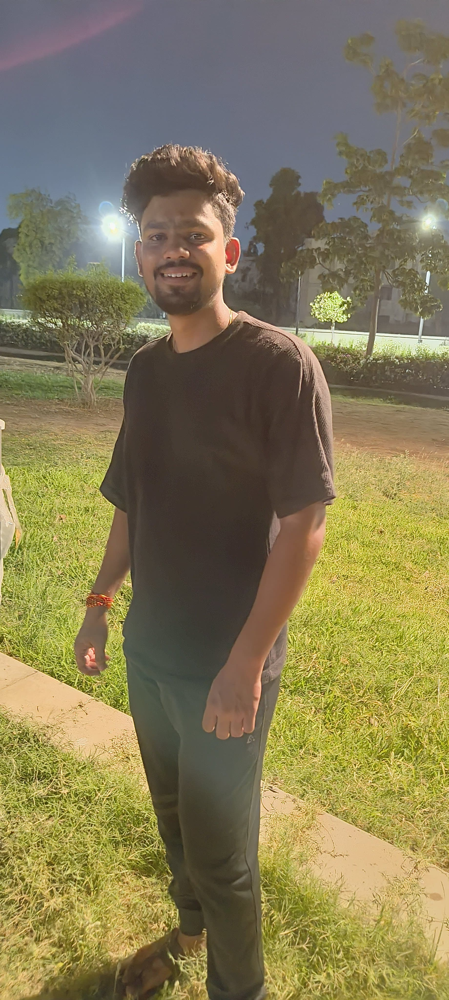

Biography
Bandu Fakate is celebrated for his legendary drinking prowess. Hailing from a vibrant community, he has become a symbol of camaraderie and festivity.
Achievements
- Winner of the Ultimate Drinking Challenge (Year)
- Featured in "The Art of Drinking" documentary
- Inspiration for many aspiring drinkers
Legacy
Bandu's legacy extends beyond drinking contests; he has fostered friendships and unforgettable memories, making him a beloved figure in his community.
